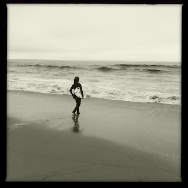

Recovered weblog entry
Epic

This shot? Not mine. It's the wife's. It really captured the scene. This little 12 year old girl against the ocean, and she was really, really good.
It had to be included.
Lens: Helga Viking
Film: Claunch 72 Monochrome